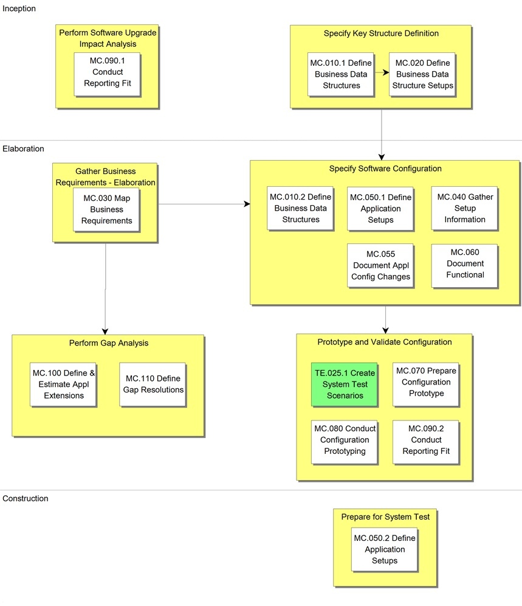

OUM |
Process Overview |
||
Method Navigation |
Current Page Navigation |
||
|
|
||||||||
In the Mapping and Configuration process, the goal is to create an acceptable and feasible configuration (of COTS software) by mapping business requirements to standard features and functions. The configuration is refined through prototyping and validating with users in preparation for system testing.
To begin, the key business data structures and associated values are defined and established within a prototype environment. The business requirements are assessed and mapped to the standard application and system features. A prototype environment is updated with detailed setup parameters, and an iterative series of workshops are conducted in order to validate that the prototype meets the business requirements. Resolutions to any gaps between the business requirements and the standard application features and functions are defined, along with the documentation of detailed setup parameters.
 This process overview is written from the perspective of a Full Method View, utilizing ALL of the activities and tasks in this process. Therefore, all of the following sections provide comprehensive information. If your project is utilizing a tailored approach (for example, Technology Full Lifecycle View, Application Implementation View, Middleware Architecture View), not everything in this overview may be appropriate for your project. Please keep this in mind, especially when reviewing the Key Work Products and Tasks and Work Products sections. You should use OUM as a guideline for performing all types of information technology projects, but keep in mind that every project is different and that you need to adjust project activities according to each situation. Do not hesitate to add, remove, or rearrange tasks, but be sure to reflect these changes in your estimates and risk management planning. You should also consider the depth to which you address and complete each task based on the characteristics of your particular project or project increment. See Oracle's Full Lifecycle Method for Deploying Oracle-Based Business Solutions for further information on the scalability and adaptability of OUM.
This process overview is written from the perspective of a Full Method View, utilizing ALL of the activities and tasks in this process. Therefore, all of the following sections provide comprehensive information. If your project is utilizing a tailored approach (for example, Technology Full Lifecycle View, Application Implementation View, Middleware Architecture View), not everything in this overview may be appropriate for your project. Please keep this in mind, especially when reviewing the Key Work Products and Tasks and Work Products sections. You should use OUM as a guideline for performing all types of information technology projects, but keep in mind that every project is different and that you need to adjust project activities according to each situation. Do not hesitate to add, remove, or rearrange tasks, but be sure to reflect these changes in your estimates and risk management planning. You should also consider the depth to which you address and complete each task based on the characteristics of your particular project or project increment. See Oracle's Full Lifecycle Method for Deploying Oracle-Based Business Solutions for further information on the scalability and adaptability of OUM.
This process flow for this process follows:

The objective of Mapping and Configuration is to create an acceptable and feasible prototype solution, that can be validated, and then is well documented.
Depending on type of business that the customer is involved in, there will a number of key business data structures that must be defined. These business data structures will be foundational to how the business is run; examples include Multi-Organization Structure, Trading Community Architecture (TCA), Chart Of Accounts etc. Once defined, a representative subset of the business data structures and associated values should be established within the prototype environment in order to act as a foundation for further more detailed setup and configuration steps.
The Mapping and Configuration process is closely related to the Business Requirements (RD) and the Requirements Analysis (RA) processes. Key outputs from these related processes include Future Process Models, Use Case Models and Supplemental Requirements. These key outputs are assessed and mapped to the standard features and functions that are available, and in scope, within the new system. Requirements that cannot be satisfied with standard features and functions are classified as gaps in data or functionality (i.e., Gaps), which will subsequently be assessed in terms of identifying a “workaround”, a business process change, or custom software extension.
The Prototype Environment is configured to support the mapped business requirements, and is refined through an iterative series of workshops designed to allow the customer and project team to progressively validate that the system will meet the in scope needs of the business.
Once the Configuration Prototype has reached a level of refinement that is close to the production needs of the customer and project team, the configuration and setup parameters are finalized and documented.
The tasks and work products for this process are as follows:
| ID | Task | Work Product |
|---|---|---|
Inception Phase |
||
MC.010.1 |
Define Business Data Structures | Business Data Structures |
MC.020 |
Define Business Data Structure Setups | Business Data Structure Setups |
MC.090.1 |
Conduct Reporting Fit Analysis | Reporting Fit Analysis |
Elaboration Phase |
||
MC.010.2 |
Define Business Data Structures | Business Data Structures |
MC.030 |
Map Business Requirements | Mapped Business Requirements |
MC.040 |
Gather Setup Information | Setup Information |
MC.050.1 |
Define Application Setups | Application Setups |
MC.055 |
Document Application Configuration Changes | Application Configuration Change Document |
MC.060 |
Document Functional Security | Functional Security Setup |
MC.070 |
Prepare Configuration Prototype Environment | Configuration Prototype Environment |
MC.080 |
Conduct Configuration Prototyping Workshop | Validated Configuration |
MC.090.2 |
Conduct Reporting Fit Analysis | Reporting Fit Analysis |
MC.100 |
Define and Estimate Application Extensions | Application Extension Definition and Estimates |
MC.110 |
Define Gap Resolutions | Gap Resolutions |
Construction Phase |
||
MC.050.1 |
Define Application Setups | Application Setups |
The objectives of the Mapping and Configuration process are:
Refer to Key Work Products for a complete list of key work products in OUM.
The following roles are required to perform the tasks within this process:
| Role ID | Name | Responsibility |
|---|---|---|
Implementing Organization |
||
| APS | Application/Product Specialist | Provide knowledge and guidance regarding the functionality and capabilities of the product(s) being implemented. Provide knowledge and guidance regarding the functionality, capabilities and implementation strategies for the product(s) being implemented. Validate that the standard reports and forms, provided with the functionality being implemented, support the implementing organization’s requirements. Assist in validating that the standard reports and forms, provided with the functionality being implemented, support the implementing organization’s requirements. |
| BA | Business Analyst | Conduct working sessions. Map detailed business requirements to the applications. Provide knowledge and guidance regarding the customer's existing business procedures, activities and functions and system access requirements. Provide assistance defining and estimating application extensions. Define gap resolutions. |
| DBA | Database Administrator | Determine and set up the database schema structure, create and set up database. |
| SAD | System Administrator | Set up the administration of security and associated privileges. Prepare parts of the application environment. |
| SA | System Architect | Provide input and advice on the architectural consequences of particular gaps and alternatives. Assist in validating that the standard reports and forms, provided with the functionality being implemented, support the implementing organization’s requirements. Define and estimate application extensions. Define gap resolutions. |
Customer (User) |
||
| KEY | Ambassador User | Participate in working sessions and help identify setup parameters and setup values. Provide specific examples of business transaction forms, reports, data, etc. Provide information on the organization’s reporting requirements. |
| BLM | Business Line Manager | Provide specific examples of business rules and procedures. Provide assistance as needed during the Perform Gap Analysis activity. |
| CPM | Customer Project Manager | Provide assistance as needed during Define and Estimate Application Extensions (MC.100). |
| CSM | Customer Staff Member | Ensure that physical resources are in place in time, and that proper software licenses are obtained. |
| PS | Project Sponsor | Provide assistance as needed during Define and Estimate Application Extensions (MC.100). |
The critical success factors of this process are:

Copyright © 2006, 2016, Oracle and/or its affiliates. All rights reserved.